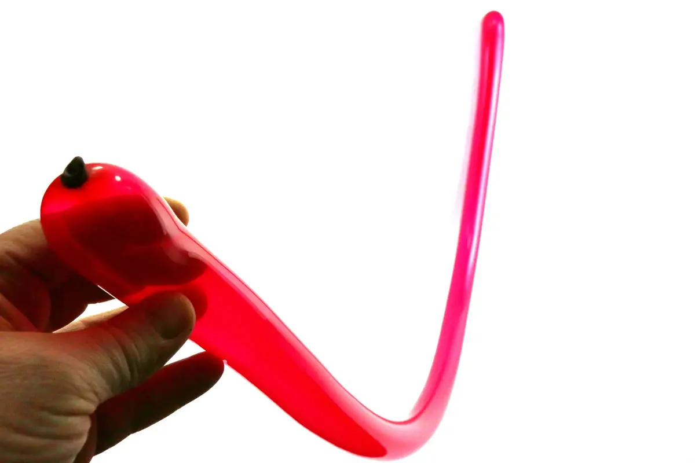1- Inflar un globo hasta el final, deja salir un poco de aire antes de hacer el nudo para que el globo sea flexible y facíl para manejar, y asegurarse de que la presión del aire sea constente a lo largo del globo.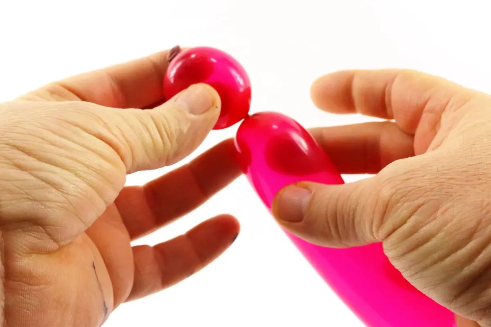2- Empezar por hacer una burbuja, bien redonda.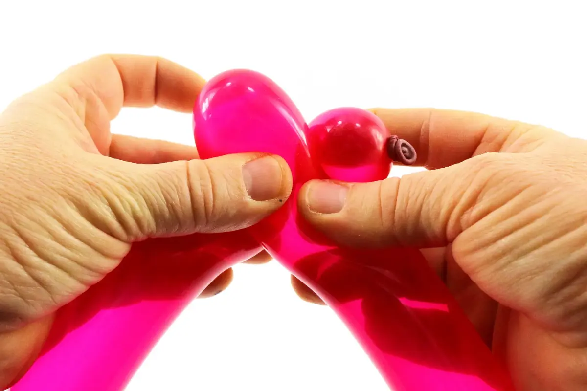3- Llevar la extremidad del globo contra el doblez localizado debajo de la burbuja.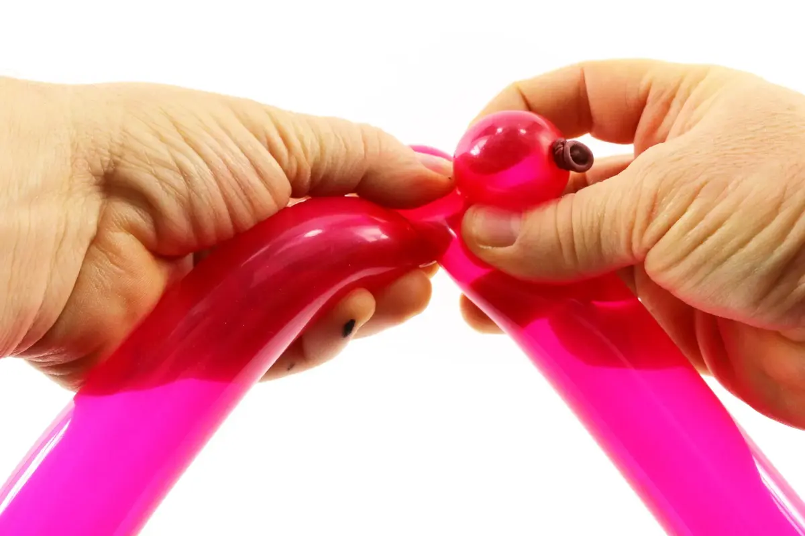4- Encajar la extremidad del globo en el doblez, a fin de crear una nueva burbuja al final del globo.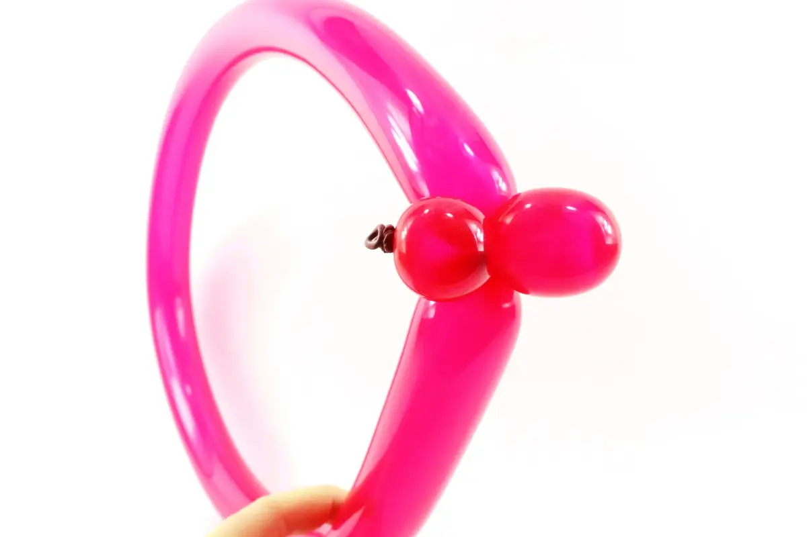5- Bloquear estos dos burbujas juntos. La segunda burbuja tendrá que ser un poco más larga que la primera.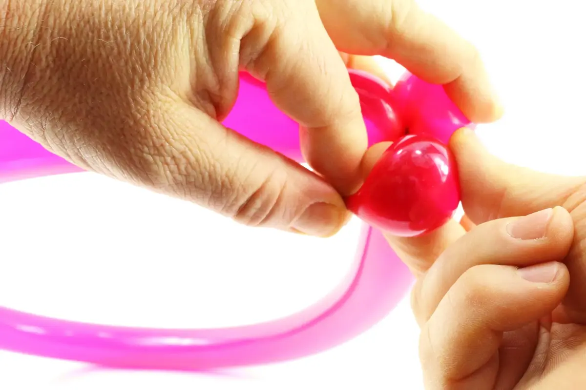6- Convertir la primera burbuja (la que tiene el nudo) en una torcedura de oreja.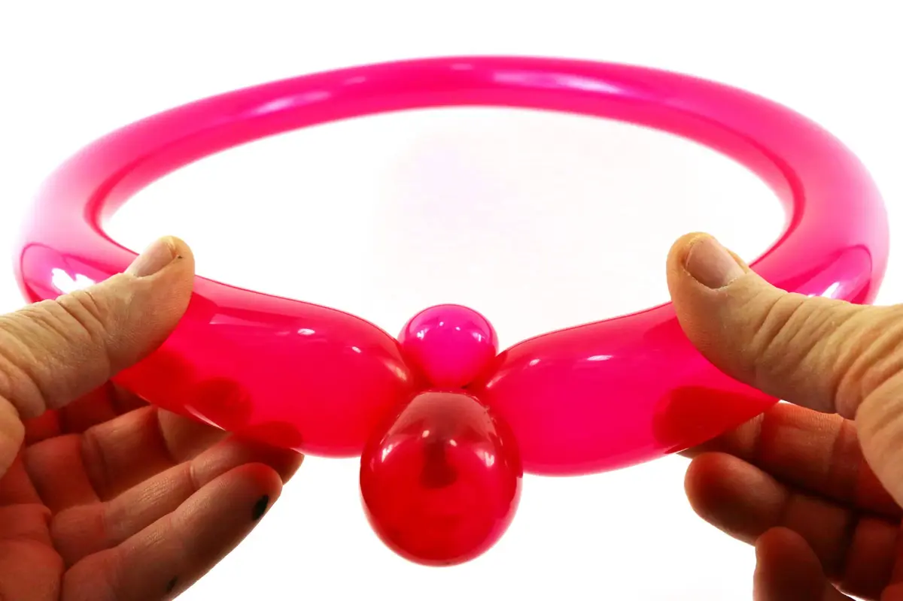7- Luego, encajar la torcedura de oreja en el doblez formado donde el bucle y la ultima burbuja se cruzan, como se ha indicado anterioremente.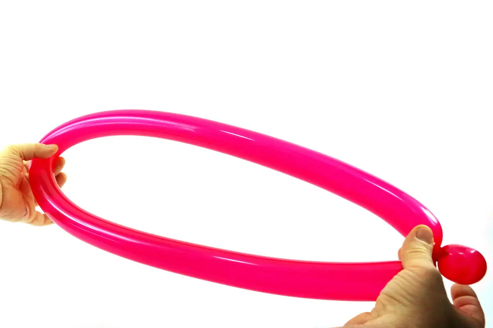8- Encontrar el medio del bucle, localizado frente de la burbuja y la torcedura de oreja.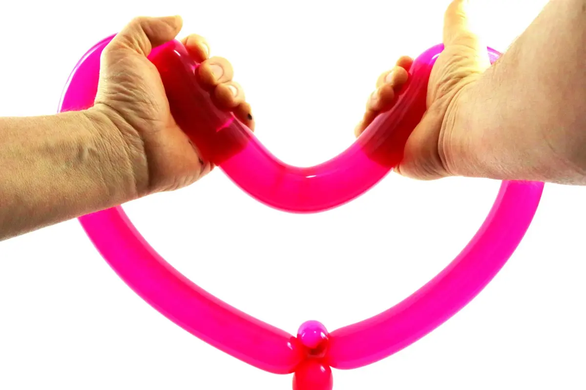9- Toma el bucle en tus manos, doblando el medio del bucle hacia dentro.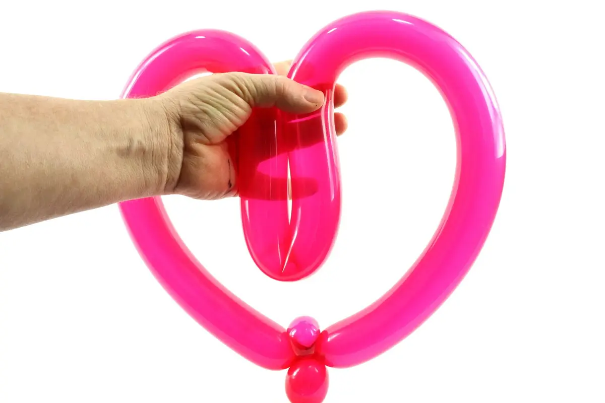10- Acercar los dos lados superiores del bucle contra el otro y mantenerlos juntos con tu mano de suporte. El medio del bucle está torcido hacia abajo.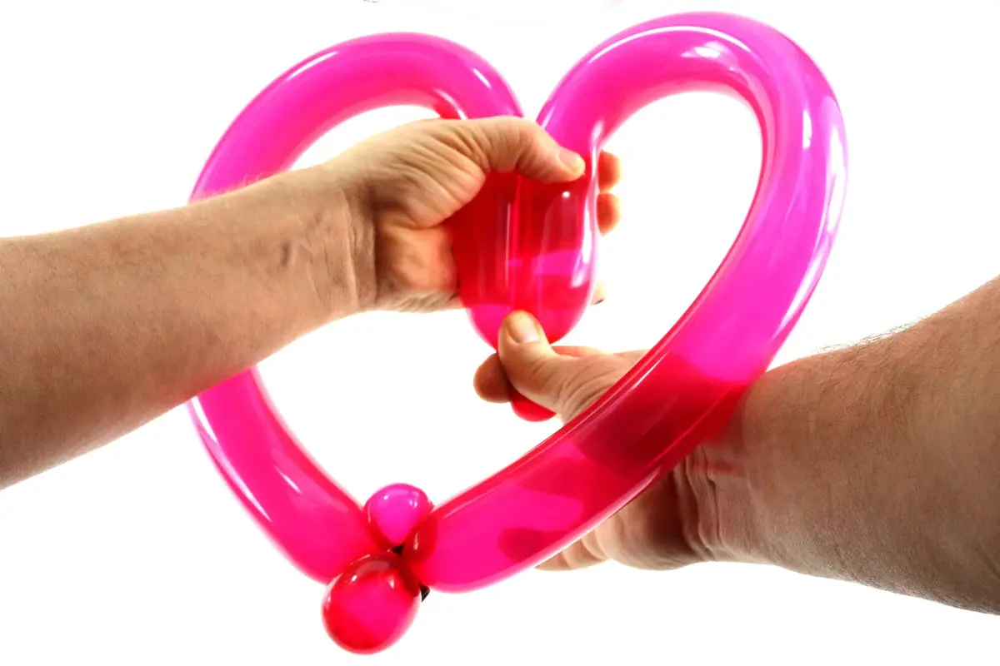11- Convertir este ángulo en un ángulo cerrado con tu mano de torcer.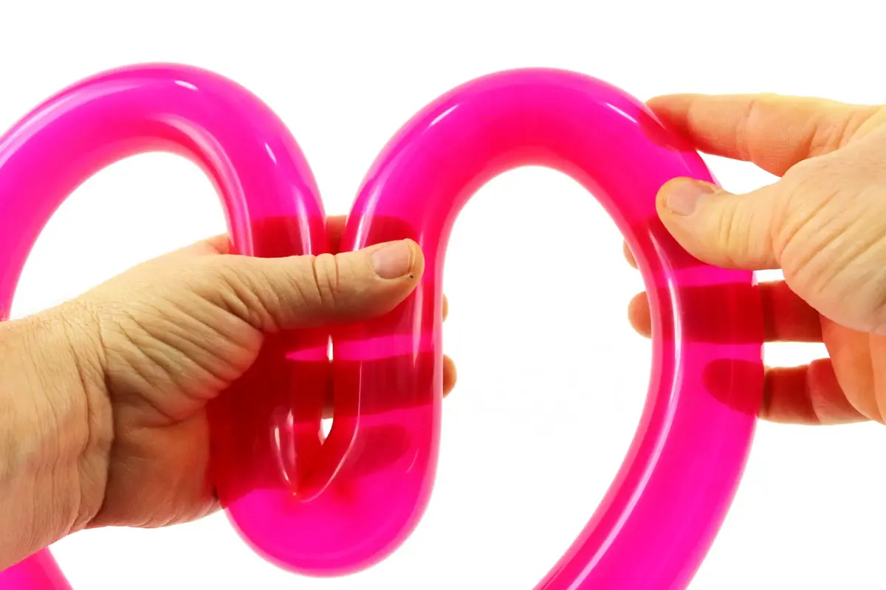12- Mientras manteniendo la extremidad del ángulo cerrado con su mano de mantenimiento, utiliza su mano de torcer para acentuar la curvaen la parte superior derecha (o izquierda, qualquiera) de la corazón.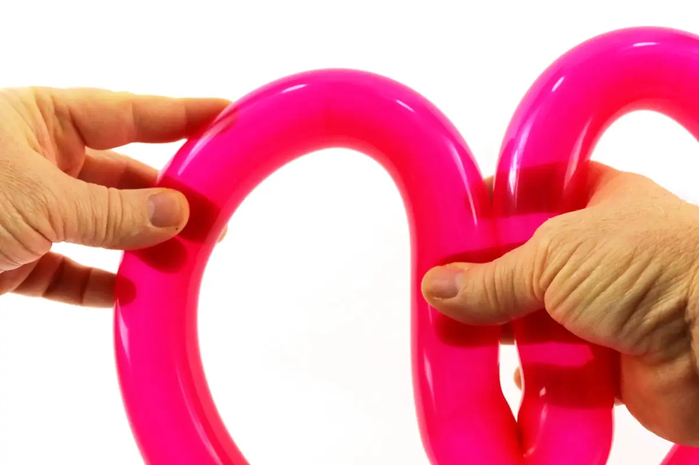13- Aún manteniendo la extremidad del ángulo en sitio, intercambiar las manos y hacerlo de nuevo; esta vez, excepcionalmente, es el mano de mantenimiento que usarás para acentuar la curvaen la otra parte superior de la corazón, mientras que el mano de torcer mantendrá el ángulo central de la corazón en su sitio.14- Finalemente, dejar poco a poco el ángulo que debería permanecer en su lugar po sí mismo. Lo que debería darle esta preciosa corazón! Hasta pronto! Para otra lección… con Môssieur Ballon!